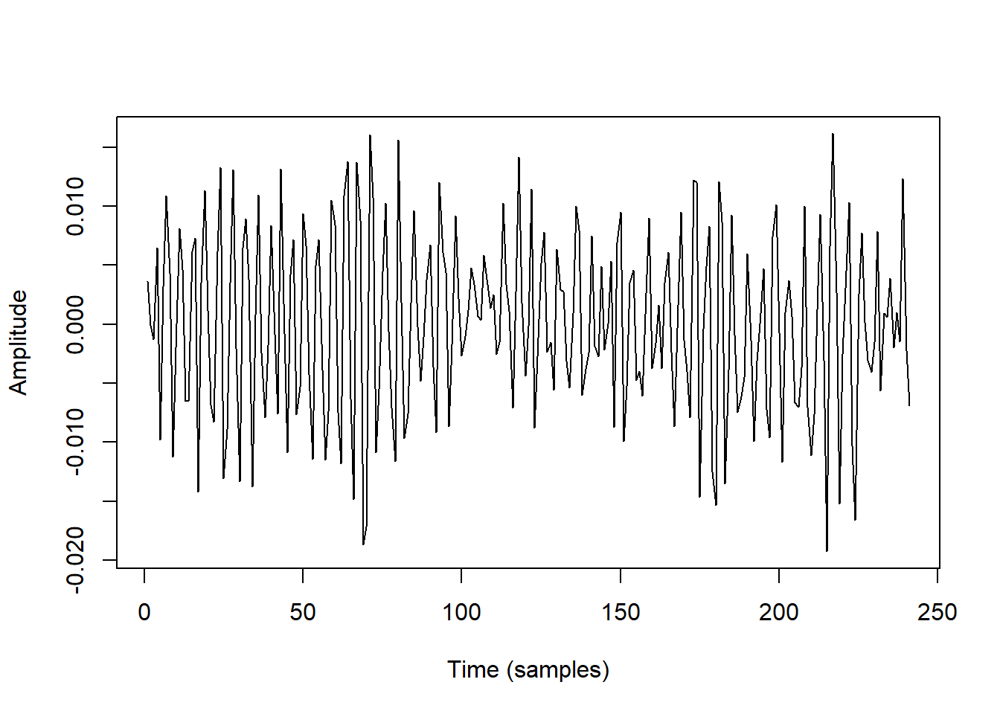
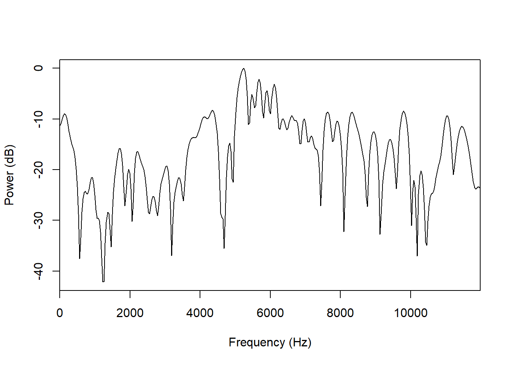
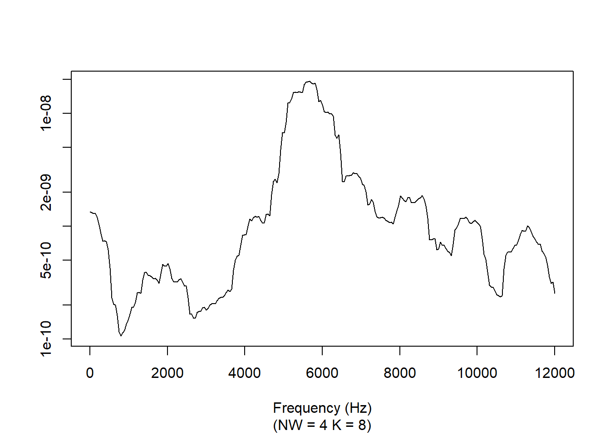
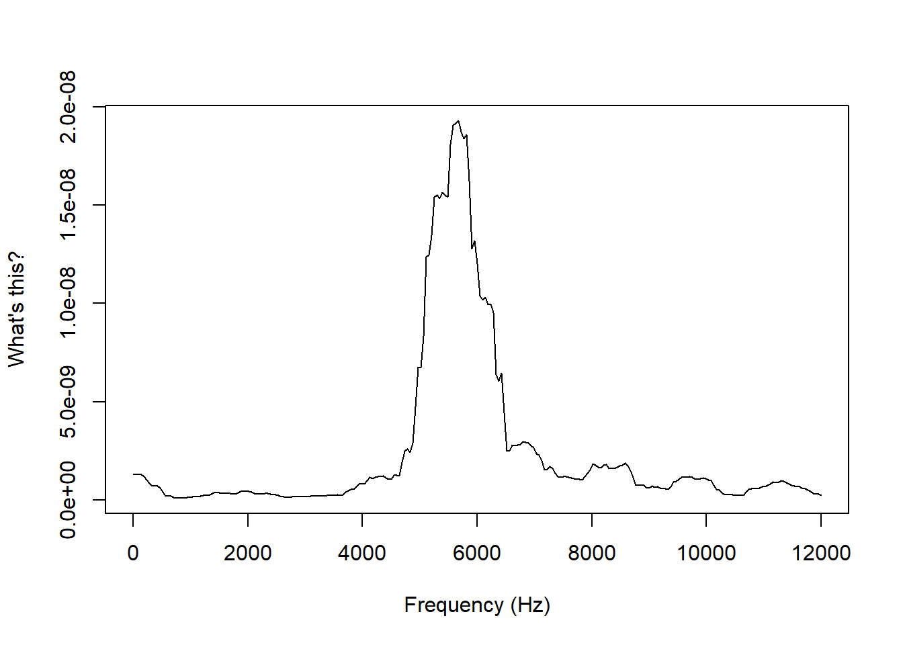
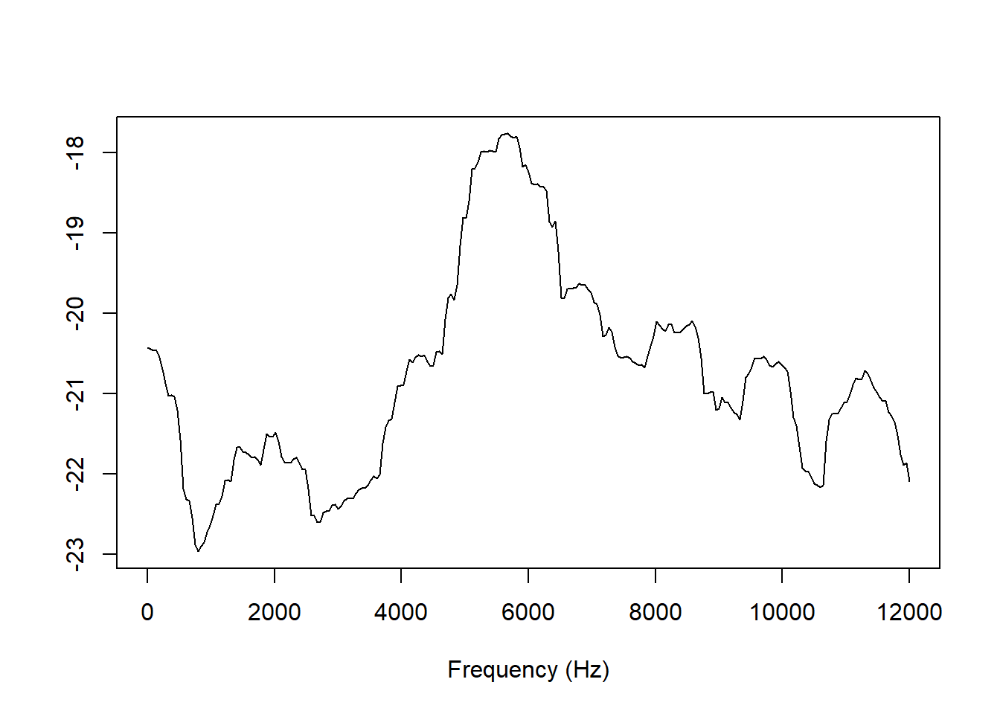

install.packages(c('rPraat', 'phonTools', 'seewave', 'multitaper', 'emuR'))Generating and analyzing multitaper spectra in R
Brief introduction
This is a tutorial showing how to generate multitaper spectra in R and how to compute their spectral moments and DCT coefficients. I will not go into a lot of technical detail about how they are computed; for more on this, see Reidy (2013) and Reidy (2015).
By way of introduction, when linguists analyze speech data, we are very often interested in how much energy is found at different frequencies. This is not easy to spot from the waveform, so the signal is converted into spectrograms or spectral slices, usually generated using the fast Fourier transformation (FFT). As the name suggests, this method is fast.
FFT spectra are suitable for analyzing voiced portions of speech, but in both theory and practice they can be less suitable for analyzing voiceless portions of speech. This is because the Fourier basis is periodic, making the FFT inherently more suitable for periodic signals, such as voiced portions of speech, and less suitable for aperiodic signals, such as voiceless portions of speech.
Variance is reduced in multitaper spectral estimation, making multitaper spectra theoretically and practically and more suitable for voiceless portions of speech. Theoretically, because there is no strong assumption of periodicity in the underlying signal, and practically, because FFT spectra of voiceless speech are packed with unwanted noise, which is a major disadvantage if you want to use spectra (or numbers computed from spectra) as dependent variables in a statistical model.
We’ll be using the packages rPraat, phonTools, seewave, multitaper, and emuR, so make sure those are installed.
Loading and preprocessing sound files
There are several functions for loading sound files into R, resulting in objects with different formats. I’ll use snd.read() from the package rPraat here, but you can use whichever method you prefer. The file contains a female Kmhmu’ speaker saying a single syllable [siːm]. It comes from this OSF repository (see Kirby, Pittayaporn, and Brunelle (2022)).
library(rPraat)
snd_obj <- snd.read('snd/1.wav')snd_obj is an object of the type Sound, which R treats as a list containing a bunch of information about the sound file. The actual sound signal is stored in snd_obj$sig, time (in seconds) of each sample is given in snd_obj$t, and the sample rate of the file is given in snd_obj$fs. If we use the base R plotting function to produce a regular line plot of the signal, we get a waveform. I’ve added red lines indicating the location of the sibilant.
sib_loc <- c(0.075, 0.21)
plot(x=snd_obj$t, y=snd_obj$sig, type='l',
xlab='Time (s)',
ylab='Amplitude')
abline(v=sib_loc, col='red', lwd=2.5)Here’s a spectrogram of the sound, generated using the spectrogram() function from the phonTools package:
library(phonTools)
spectrogram(snd_obj$sig[,1], fs=snd_obj$fs, maxfreq=8000,
colors=FALSE, dynamicrange=60)
abline(v=sib_loc*1000, col='red', lwd=2.5)This sound file has a sample rate of 44.1 kHz, which is much more than we need for our purposes, so I’ll downsample it to 16 kHz using the resamp() function from the seewave package. This function takes the arguments f (the original sample rate) and g (the desired sample rate).
library(seewave)
sr <- 16000
snd_16kHz <- resamp(snd_obj$sig, f=snd_obj$fs, g=sr)Next, I’ll extract just those sound samples that belong to the sibilant in the object, and extract a 10 ms snippet from the middle of that.
snd_sib <- snd_16kHz[(sib_loc[1]*sr):(sib_loc[2]*sr)]
mid <- length(snd_sib)/2
snd <- snd_sib[(mid-(0.005*sr)):(mid+(0.005*sr))]Our 10 ms snippet snd looks like this:
plot(snd, type='l', xlab='Time (samples)', ylab='Amplitude')
Generating spectra
First of all, for expository purposes, I’ll generate an FFT spectrum of our sound using the spectralslice() function in phonTools. The fs argument is the signal’s sample rate.
fft <- spectralslice(snd, fs=sr)
As you can see, it’s very noisy and jagged. I saved it in an object fft which is a matrix containing information about the energy distribution in dB by frequency:
head(fft) hz dB
[1,] 0.00000 -13.11734
[2,] 33.12629 -12.71219
[3,] 66.25259 -11.82737
[4,] 99.37888 -11.00038
[5,] 132.50518 -10.53785
[6,] 165.63147 -10.54571I’ll go ahead and convert that to a data frame, which will make our lives easier down the line.
fft_df <- as.data.frame(fft)Multitaper spectra can be generated using the spec.mtm() function from the multitaper package. I set the arguments nw, a frequency bandwidth parameter, and k, the number of eigenspectra used to compute the final spectrum, following the suggestions by Reidy (2013). The spec.mtm() defaults are nw=4, which is also what Reidy uses, and k=7, where Reidy uses \(K=2nW\), i.e. k=8. The deltat argument is the duration of each sample in the signal, i.e. 1 divided by our sample rate.
library(multitaper)
mts <- spec.mtm(snd, nw=4, k=8, deltat=1/sr,
xlab='Frequency (Hz)', ylab='', main='')
The multitaper spectrum has a much more stable shape than the FFT spectrum.
Since we already converted the FFT spectrum to a data frame, that already has the format we need for computing things like spectral moments and DCT coefficients. The R object containing the multitaper spectrum is rather more complicated:
summary(mts) Length Class Mode
origin.n 1 -none- numeric
method 1 -none- character
pad 1 -none- numeric
spec 257 -none- numeric
freq 257 -none- numeric
series 1 -none- character
adaptive 1 -none- logical
mtm 14 -none- list The information that we have in the corresponding FFT spectrum data frame fft_df is what’s stored in mts$spec and mts$freq. Be aware, however, that we can’t just grab those from the mts object and assume all is well. If we plot them directly, we get this:
plot(x=mts$freq, y=mts$spec, type='l',
xlab='Frequency (Hz)', ylab="What's this?")
It doesn’t look at all like what we saw above. This is because energy is in the \(W/m^2\) scale and not the decibel scale. Taking the natural log of this number will give us a spectrum that’s visually identical to what the plotting function of multitaper produces.
plot(x=mts$freq, y=log(mts$spec), type='l',
xlab='Frequency (Hz)', ylab='')
I usually standardize spectra before analyzing them statistically, so the exact scale is much less important than the curve shape. For now, let’s save a logged version of the multitaper spectrum in a data frame like we did with the FFT spectrum.
mts_df <- data.frame(hz = mts$freq,
energy = log(mts$spec))Computing spectral moments
We calculate spectral moments using the function moments() from the package emuR. It takes the arguments count which is our energy dimension (in whatever scale) and x which is our frequency dimension (in whatever scale). moments() simply returns a vector with four numbers, corresponding to the first four spectral moments, i.e. mean (AKA center of gravity), variance, skew, and kurtosis. Phonetics studies usually report standard deviation rather than variance, because standard deviation is on the easily interpretable Hz scale while variance is on the \(Hz^2\) scale. For this reason, we replace the second number of the vector with its square root. We also have to set minval=TRUE because our energy scale contains negative values; if we don’t do this, the results would essentially be as if we had flipped the spectrum upside down.
Let’s try to do this for our FFT spectrum first.
library(emuR)
fft_moments <- moments(fft_df$dB, fft_df$hz, minval=TRUE)
fft_moments[2] <- sqrt(fft_moments[2])And we’ll repeat that for our multitaper spectrum.
mts_moments <- moments(mts_df$energy, mts_df$hz, minval=TRUE)
mts_moments[2] <- sqrt(mts_moments[2])Let’s compare the two results.
fft_moments[1] 4448.8620672 2263.6365777 -0.3434053 -0.9921930mts_moments[1] 5285.5510979 1923.2638132 -0.9888046 0.4330012The standard deviations are not so different, but there’s a very significant 500+ Hz difference in center of gravity, and notable differences in skewness and kurtosis as well. The take home message is that the method of spectral estimation matters.
Computing DCT coefficients
Another way of summarizing spectral shape is using the coefficients of a discrete cosine transformation of the spectrum. Usually the first four coefficients are reported. This is also implemented in the emuR package, in the dct() function. dct() takes the arguments data which is our energy dimension, and m which is the number of coefficients to return. Since DCT coefficients only say something about the shape of a curve, the function doesn’t actually care about the frequency dimension. If we set m=3, the function returns a vector of four numbers, corresponding to k0, k1, k2, and k3, which reflect mean amplitude, linear slope, curvature, and strength at higher frequencies, respectively.
For our FFT spectrum, it looks like this.
fft_dct <- dct(fft_df$dB, m=3)And for our multitaper spectrum, it looks like this.
mts_dct <- dct(mts_df$energy, m=3)These are the results.
fft_dct[1] -17.3128029 -5.1061743 -0.2610576 2.3781157mts_dct[1] -28.54994097 -1.43138455 0.05025888 0.69589289Here, as well, different methods of spectral estimation have serious implications for the results.
Bulk processing
Usually we won’t want to compute and analyze a single spectrum. If we have a research question, we’ll probably want to do this in bulk by looking at how the spectrum changes over time, or we’ll have multiple tokens of some consonant, multiple sound files, etc. Here I’ll just give two examples of how spectra can be computed and analyzed in bulk. Hopefully these examples can also be helpful for other use cases.
If we wanted to look at spectral dynamics over time in our fricative snd_sib by computing, say, spectral moments from 10 equidistant multitaper spectra of 10 ms, we could then do the following.
#number of samples in 10 ms
cs <- sr/100
#number of samples in the fricative
n_samp <- length(snd_sib)
#our number of equidistant spectra
steps <- 10
#create vector of start times for the spectra
t1 <- seq(1, n_samp-cs, length.out=steps)
#create vector of end times for the spectra
t2 <- seq(cs, n_samp, length.out=steps)
#create empty data frame with nrow=steps
mom <- data.frame(step = rep(NA, steps),
cog = rep(NA, steps),
sd = rep(NA, steps),
skew = rep(NA, steps),
kurtosis = rep(NA, steps))
for (i in 1:steps) {
#create ith 10 ms snippet
tmp <- snd_sib[t1[i]:t2[i]]
#compute multitaper spectrum without plotting
tmp_mts <- spec.mtm(tmp, nw=4, k=8, deltat=1/sr, plot=FALSE)
#compute spectral moments
tmp_mom <- moments(count=log(tmp_mts$spec), x=tmp_mts$freq, minval=TRUE)
mom$step[i] <- i
mom$cog[i] <- tmp_mom[1]
#compute standard deviation from variance
mom$sd[i] <- sqrt(tmp_mom[2])
mom$skew[i] <- tmp_mom[3]
mom$kurtosis[i] <- tmp_mom[4]
}This results in a data frame with time series for each spectral moments. It looks like this:
mom step cog sd skew kurtosis
1 1 4571.408 2166.009 -0.6673762 -0.77891571
2 2 4783.664 1971.263 -0.6685795 -0.21745276
3 3 5023.175 1944.880 -0.8370027 0.12011007
4 4 5216.251 1837.283 -0.8268089 0.38115373
5 5 5164.443 2035.474 -0.8708143 -0.02836778
6 6 5060.708 2107.689 -0.8178161 -0.23411048
7 7 5040.835 2154.075 -0.8062055 -0.30271009
8 8 4844.621 2406.120 -0.8944617 -0.49022781
9 9 5159.789 2039.067 -0.9876985 0.16785162
10 10 4396.522 2413.308 -0.5145603 -0.95902483(Hint: If you were to repeat this with FFT spectra, you’d see that the variation between adjacent spectra would be much larger).
Imagine that we had a sound file with a bunch of sibilants and for each of them we want to compute the first four DCT coefficients of multitaper spectra computed around the 10 ms midpoint. Here’s an example of a sound file with 5 [s]es and a TextGrid that marks their locations. (I plot this using a home cooked function plot_tg_tier, which you can find in the source code for this tutorial.)
plot_tg_tier(sound='snd/5.wav', textgrid='snd/5.TextGrid', tier='sib',
max_freq=8000)In order to do this, we’d first load in the TextGrid using the function tg.read() from the rPraat package.
tg <- tg.read('snd/5.TextGrid')This TextGrid has just one tier sib, and the resulting R object contains information about the start and end times of each interval and the labels in them.
The rest of the operation could look like this:
#find the intervals with label 's'
s_int <- which(tg$sib$label == 's')
#how many intervals?
ns <- length(s_int)
#create empty data frame with nrow=ns
dct_coef <- data.frame(id = rep(NA, ns),
t1 = rep(NA, ns),
t2 = rep(NA, ns),
k0 = rep(NA, ns),
k1 = rep(NA, ns),
k2 = rep(NA, ns),
k3 = rep(NA, ns))
for (i in 1:ns) {
#number of the ith interval with label 's'
int <- s_int[i]
#start time of the ith interval with label 's'
t1 <- tg$sib$t1[int]
#end time of the ith interval with label 's'
t2 <- tg$sib$t2[int]
#mid point of the interval
midpoint <- t1 + (t2-t1) / 2
#read in 10 ms snippet from sound file around the midpoint
#of the ith interval with label 's'
tmp <- snd.read('snd/5.wav',
from=midpoint-0.005, to=midpoint+0.005,
units='seconds')
#downsample to 16 kHz as shown above
tmp_16kHz <- as.vector(resamp(tmp$sig, f=tmp$fs, g=sr))
#compute multitaper spectrum without plotting
tmp_mts <- spec.mtm(tmp_16kHz, nw=4, k=8, deltat=1/sr, plot=FALSE)
#get 4 DCT coefficients as shown above
tmp_dct <- dct(log(tmp_mts$spec), m=3)
#fill in data frame
dct_coef$id[i] <- i
dct_coef$t1[i] <- t1
dct_coef$t2[i] <- t2
dct_coef$k0[i] <- tmp_dct[1]
dct_coef$k1[i] <- tmp_dct[2]
dct_coef$k2[i] <- tmp_dct[3]
dct_coef$k3[i] <- tmp_dct[4]
}We now have a data frame dct_coef with spectral DCT coefficients computed from the midpoint of each sibilant:
dct_coef id t1 t2 k0 k1 k2 k3
1 1 0.1142821 0.2950639 -26.54519 -1.529873 0.4460807 0.30874918
2 2 0.8182295 0.9670684 -26.01753 -1.501038 0.3764371 -0.03228430
3 3 1.7678831 1.8943365 -26.36810 -1.606486 0.3366901 -0.07079519
4 4 2.5671831 2.7023670 -26.28169 -1.633347 0.5080955 -0.37781924
5 5 3.2914200 3.4253128 -27.27152 -1.289093 0.3231615 -0.10775605References
Kirby, James, Pittayawat Pittayaporn, and Marc Brunelle. 2022. “Transphonologization of Onset Voicing: Revisiting Northern and Eastern Kmhmu’.” Phonetica 79 (6): 591–629. https://doi.org/10.1515/phon-2022-0029.
Reidy, Patrick. 2013. “An Introduction to Random Processes for the Spectral Analysis of Speech Data.” Ohio State University Working Papers in Linguistics 60: 67–116.
———. 2015. “A Comparison of Spectral Estimation Methods for the Analysis of Sibilant Fricatives.” JASA Express Letters 137 (4): 248–54. https://doi.org/10.1121/1.4915064.
Reuse
CC-BY-SA 4.0